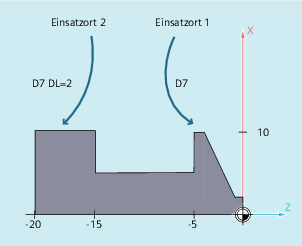

Additive Korrekturen können als in der Bearbeitung programmierbare Prozesskorrekturen betrachtet werden. Sie beziehen sich auf die geometrischen Daten einer Schneide und sind somit Bestandteil der Werkzeugschneidendaten.
Die Daten einer additiven Korrektur werden über eine DL-Nummer angesprochen (DL: Location dependent; Korrekturen bezüglich des jeweiligen Einsatzorts) und über die Bedienoberfläche eingegeben.
Durch additive Korrekturen können einsatzortbedingte Maßfehler ausgeglichen werden.
| Befehl zur Aktivierung einer additiven Korrektur |
| Über den Parameter |
| Hinweis |
Die Festlegung von Anzahl und Aktivierung der additiven Korrekturen erfolgt über Maschinendaten (→ Angaben des Maschinenherstellers beachten!). |
Die gleiche Schneide wird für 2 Lagersitze verwendet:
| Programmcode | Kommentar |
|---|---|
| N110 T7 D7 | ; Der Revolver wird auf Platz 7 positioniert. D7 und DL=1 werden aktiviert und im nächsten Satz herausgefahren. |
| N120 G0 X10 Z1 | |
| N130 G1 Z-6 | |
| N140 G0 DL=2 Z-14 | ; Additiv zu D7 wird DL=2 aktiviert und im nächsten Satz herausgefahren. |
| N150 G1 Z-21 | |
| N160 G0 X200 Z200 | ; Werkzeugwechselpunkt anfahren. |
| ... |
Siehe auch:
Verschleiß- und Einrichtewerte festlegen ($TC_SCPxy[t,d], $TC_ECPxy[t,d])
Additive Korrekturen löschen (DELDL)